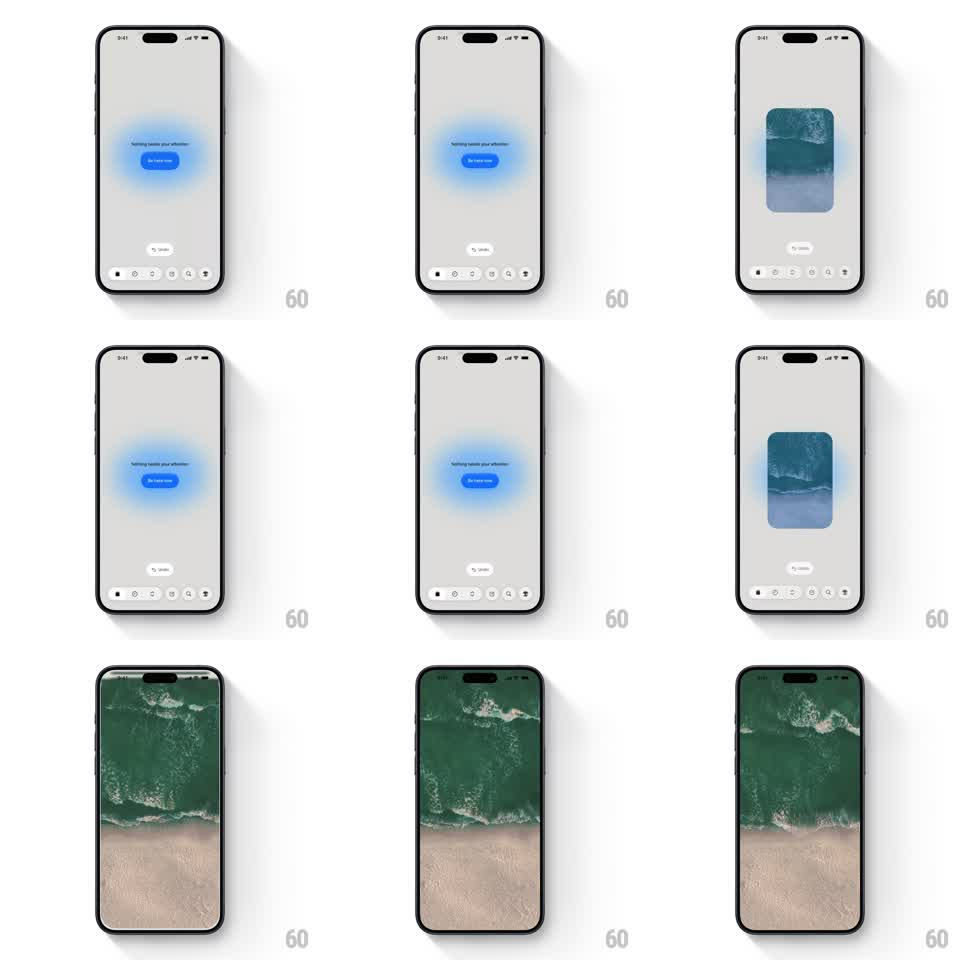

Media
Frame-by-frame

Rebuild this interaction 1:1: Avec's button-to-video morph - a glowing blue pill scales up from its seat into a rounded video card and then full-screen playback, one continuous transformation.

Rebuild this interaction 1:1: Avec's button-to-video morph - a glowing blue pill scales up from its seat into a rounded video card and then full-screen playback, one continuous transformation.
## Integration
Integration: stack-agnostic spec - springs given as stiffness/damping, timed motions as duration + curve; map every value to your framework and animation library of choice.
## Scene
Minimal grey stage: a glowing blue pill button ("Be here now") wrapped in a soft blue aura with a whisper line above it, a "Try Later" pill below, and a small bottom dock of icons. The morph target: an ocean-waves video that fills first a card, then the full screen.
## Motion spec
Pattern: shared-element morph - button becomes the video player.
- On tap, the pill expands from its own frame: corners round out to a card (border-radius 24 -> 20px), width and height grow (spring ~260/16, ~500ms) while the label fades (150ms).
- The blue aura stretches with it and dissolves into the card's edge glow, then dies.
- The video fades in inside the card (200ms) already playing, and after a 400ms beat the card expands to full screen (350ms, ease-in-out), status bar content dimming out.
- Reverse on dismiss: the player shrinks back into the pill, aura reigniting.
## Calibration
- The morph must be one motion - no jump between "card" and "fullscreen" states, just continuous growth with a pause.
- The aura is part of the button's identity; it reappears only when the pill is whole again.
## Reduced motion
Button crossfades to the card; card crossfades to fullscreen (250ms each).
## Don't miss
- The video's first frame is visible before the card finishes growing - playback never waits for layout.
- The bottom dock slides down and away as the video claims the screen.